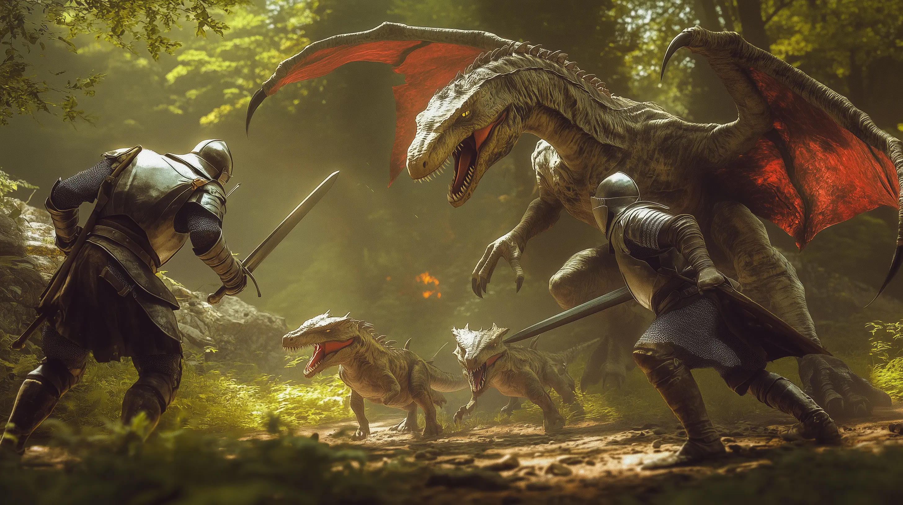

The developer reference for the Song of Heroic Lands (SoHL) Foundry VTT system, generated from the source with TypeDoc — every exported class, function, and type. It is intended for developers building against or extending SoHL and contributors working on the system itself.
Looking for guides — architecture, how-tos, concepts, contributing? Those live in the Knowledgebase, alongside the player-facing content reference. This site is the generated symbol reference only.
Looking for how to play? Player- and GM-facing rules, the quickstart, and character creation live on the project site: heroiclands.org.
sohl.* namespace tree (see below).src/ tree. Read this first.The navigation on the left mirrors the sohl.* namespace tree, so a symbol's
documentation path equals its location in the source and on the runtime global
(for example sohl.document.actor.logic.BeingLogic):
sohl.core — Foundry-layer foundations: system registration, the
data-model and logic bases, the FoundryHelpers shim, calendar, event queue.sohl.document — Foundry document types by kind (actor, item, combat,
combatant, chat, effect, scene, token), each with its Foundry-free logic.sohl.entity — pure, Foundry-free game-mechanics objects: modifiers,
results, body, actions, movement, strike modes, expressions.sohl.utils — shared utilities: constants, helpers, collections.sohl.apps — standalone Foundry application windows.SoHL is licensed under GPL-3.0-or-later (code) and CC-BY-SA-4.0 (content). Source on GitHub.